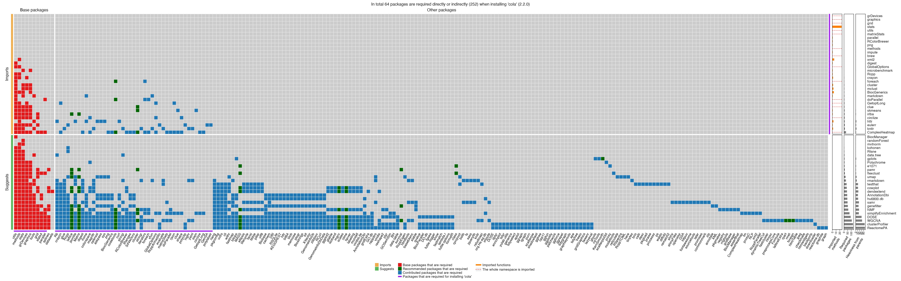
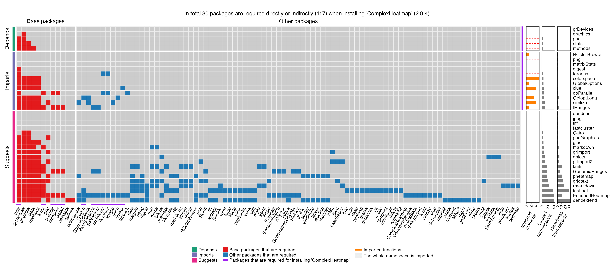

When developing R packages, we should try to avoid directly setting dependencies on “heavy packages”. The “heaviness” for a package means, the number of additional dependency packages it brings to. If your package directly depends on a heavy package, it would bring several consequences:
- Users need to install a lot of additional packages when installing your package which brings the risk that installation of some packages may fail and it makes your package cannot be installed.
- The namespaces that are loaded into your R session after loading your package will be huge (you can see the loaded namespaces by
sessionInfo()). - You package will be “heavy” as well and it may take long time to load your package.
In the DESCRIPTION file of your package, there are “direct dependency pakcages” listed in the Depends, Imports and LinkingTo fields. There are also “indirect dependency packages” that can be found recursively for each of the direct dependency packages. Here what we called “dependency packages” are the union of the direct and indirect dependency packages.
There are also packages listed in Suggests and Enhances fields in DESCRIPTION file, but they are not enforced to be installed when installing your package. Of course, they also have “indirect dependency packages”. To get rid of the heavy packages that are not often used in your package, it is better to move them into the Suggests/Enhances fields and to load/install them only when they are needed.
Here the pkgndep package checks the heaviness of the dependency packages of your package. For each package listed in the Depends, Imports, LinkingTo and Suggests/Enhances fields in the DESCRIPTION file, pkgndep checks how many additional packages your package requires. The summary of the dependency is visualized by a customized heatmap.
As an example, I am developing a package called cola which depends on a lot of other packages. The dependency heatmap looks like follows (please drag the figure to a new tab to see it in its actual size):

In the heatmap, rows are the packages listed in Depends, Imports and Suggests fields, columns are the additional dependency packages required for each row package. The barplots on the right show the number of required package, the number of imported functions/methods/classes (parsed from NAMESPACE file) and the quantitative measure “heaviness” (the definition of heaviness will be introduced later).
We can see if all the packages are put in the Depends or Imports field (i.e. movig all suggsted packages to Imports), in total 248 packages are required, which are really a lot. Actually some of the heavy packages such as WGCNA, clusterProfiler and ReactomePA (the last three packages in the heatmap rows) are not very frequently used in cola, moving them to Suggests field and using them only when they are needed greatly helps to reduce the heaviness of cola. Now the number of required packages are reduced to only 64.
Usage
To use this package:
or
Executable examples:
## retrieve package database from CRAN/Bioconductor...
## - 21189 remote packages on CRAN/Bioconductor.
## - 743 packages installed locally.
## prepare dependency table...
## prepare reverse dependency table...
pkg## ComplexHeatmap, version 2.11.1
## - 30 additional packages are required for installing 'ComplexHeatmap'.
## - 117 additional packages are required if installing packages listed
## in all fields in DESCRIPTION.pkgndep() first needs to retrieve package databases both from remote repositories and local libraries, as you can see the message from above code. This only happens once and the database is internally saved and re-used.
We can directly use plot() function to create the dependency heatmap:
plot(pkg)
You can set the file argument to directly save the image into a figure where the figure size is automatically calculated. Supported image formats are png/jpg/svg.
plot(pkg, file = "test.png")html_report() function can generate a html report for the dependency analysis on the package:
html_report(pkg)Heaviness
The heaviness of package dependency can be measured quantitatively. pkgndep provides two measures: the absolute measure and the relative measure.
The heaviness of a dependency package is calculated as follows. If package B is in the Depends/Imports/LinkingTo fields of package A, which means, package B is directly required for package A, denote v1 as the total number of packages for package A, and denote v2 as the total number of required packages if moving package B to Suggests in package A (which means, now B is not enforced to be installed for package A). The absolute measure of heaviness is simply v1 - v2 and relative measure is (v1 + a)/(v2 + a) where a is a small constant, e.g. 10. So here the absolute heaviness for package B on package A is the number of additional packages that package B brings in.
In the second scenario, if package B is in the Suggests/Enhances fields of package A, now v2 is the total number of required packages if moving package B to Imports in package A, the absolute measure of heaviness is v2 - v1 and relative measure is (v2 + a)/(v1 + a).
The heaviness score can be calculated by the function heaviness():
heaviness(pkg)## grDevices graphics grid stats methods
## 0 0 0 0 0
## RColorBrewer png matrixStats digest foreach
## 1 1 1 1 0
## colorspace GlobalOptions clue doParallel GetoptLong
## 0 0 2 1 3
## circlize IRanges dendsort jpeg tiff
## 2 4 1 1 1
## fastcluster Cairo gridGraphics glue markdown
## 1 1 1 1 3
## grImport gplots grImport2 knitr GenomicRanges
## 2 5 4 11 7
## pheatmap gridtext rmarkdown testthat EnrichedHeatmap
## 11 14 18 29 12
## dendextend
## 32
heaviness(pkg, rel = TRUE)## grDevices graphics grid stats methods
## 1.000000 1.000000 1.000000 1.000000 1.000000
## RColorBrewer png matrixStats digest foreach
## 1.025641 1.025641 1.025641 1.025641 1.000000
## colorspace GlobalOptions clue doParallel GetoptLong
## 1.000000 1.000000 1.052632 1.025641 1.081081
## circlize IRanges dendsort jpeg tiff
## 1.052632 1.111111 1.025000 1.025000 1.025000
## fastcluster Cairo gridGraphics glue markdown
## 1.025000 1.025000 1.025000 1.025000 1.075000
## grImport gplots grImport2 knitr GenomicRanges
## 1.050000 1.125000 1.100000 1.275000 1.175000
## pheatmap gridtext rmarkdown testthat EnrichedHeatmap
## 1.275000 1.350000 1.450000 1.725000 1.300000
## dendextend
## 1.800000
A fast version of tools::package_dependencies()
The package dependencies are based on “package database” which is normally retrieved by available.packages(). In tools package, there is a package_dependencies() function that can be used to get a list of dependency packages. In the following example code, we retrieve the dependency packages for package cola.
db = available.packages(repos = BiocManager::repositories())## 'getOption("repos")' replaces Bioconductor standard repositories, see
## '?repositories' for details
##
## replacement repositories:
## CRAN: https://cloud.r-project.org
system.time(p1 <- tools::package_dependencies("cola", db = db, recursive = TRUE)[[1]])## user system elapsed
## 0.220 0.002 0.222In pkgndep, we implement a faster version of package_dependencies() function. First the database needs to be reformatted by reformat_db() function. The returned variable db2 is a reference class object and its method db2$package_dependencies() can be used to retrieve dependency packages.
db2 = reformat_db(db)## prepare dependency table...
## prepare reverse dependency table...
db2## A package database of 21899 packages.
## - 3416 Bioconductor / 18483 CRAN / 0 other packages.
system.time(p2 <- db2$package_dependencies("cola", recursive = TRUE, simplify = TRUE))## user system elapsed
## 0.005 0.000 0.005p1 and p2 are actually identical:
## [1] TRUEA global dependency analysis on all packages on CRAN/Bioconductor
pkgndep also integrates an web-based database of the dependency analysis of all pacakges on CRAN/Bioconductor. The packages of the analysis were retrieved on 2021-10-28. The database can be opened by the open_website() function.
Following is a screenshot of the database.

Session info
## R version 4.1.2 (2021-11-01)
## Platform: x86_64-apple-darwin17.0 (64-bit)
## Running under: macOS Big Sur 10.16
##
## Matrix products: default
## BLAS: /Library/Frameworks/R.framework/Versions/4.1/Resources/lib/libRblas.0.dylib
## LAPACK: /Library/Frameworks/R.framework/Versions/4.1/Resources/lib/libRlapack.dylib
##
## locale:
## [1] C/UTF-8/C/C/C/C
##
## attached base packages:
## [1] stats graphics grDevices utils datasets methods base
##
## other attached packages:
## [1] pkgndep_1.1.1
##
## loaded via a namespace (and not attached):
## [1] Rcpp_1.0.7 ComplexHeatmap_2.11.1 BiocManager_1.30.16
## [4] highr_0.9 RColorBrewer_1.1-2 bslib_0.3.0
## [7] compiler_4.1.2 jquerylib_0.1.4 iterators_1.0.13
## [10] tools_4.1.2 digest_0.6.27 clue_0.3-59
## [13] jsonlite_1.7.2 evaluate_0.14 memoise_2.0.0
## [16] png_0.1-7 rlang_0.4.11 foreach_1.5.1
## [19] magick_2.7.2 yaml_2.2.1 parallel_4.1.2
## [22] pkgdown_1.6.1 xfun_0.24 fastmap_1.1.0
## [25] cluster_2.1.2 stringr_1.4.0 knitr_1.33
## [28] S4Vectors_0.30.0 desc_1.3.0 fs_1.5.0
## [31] sass_0.4.0 GlobalOptions_0.1.2 systemfonts_1.0.2
## [34] IRanges_2.26.0 stats4_4.1.2 rprojroot_2.0.2
## [37] grid_4.1.2 R6_2.5.0 GetoptLong_1.0.3
## [40] textshaping_0.3.5 hash_2.2.6.1 rmarkdown_2.9
## [43] magrittr_2.0.1 codetools_0.2-18 htmltools_0.5.2
## [46] matrixStats_0.59.0 BiocGenerics_0.38.0 shape_1.4.6
## [49] colorspace_2.0-2 circlize_0.4.14 ragg_1.1.3
## [52] stringi_1.6.2 doParallel_1.0.16 cachem_1.0.5
## [55] crayon_1.4.1 rjson_0.2.20